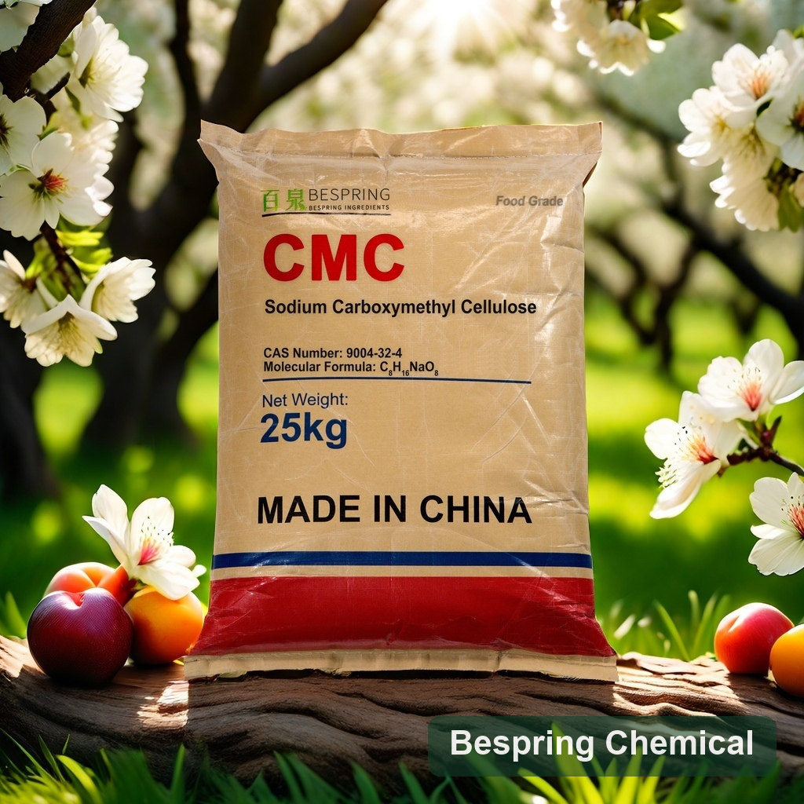
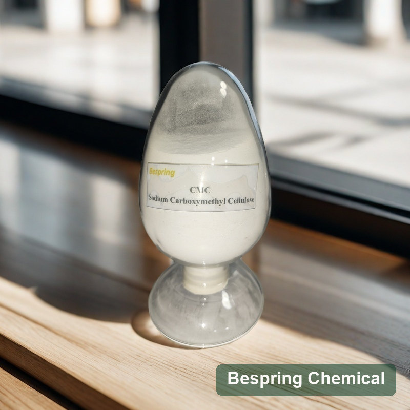
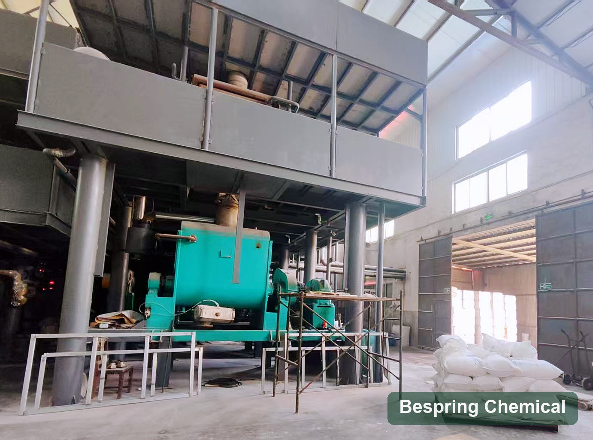
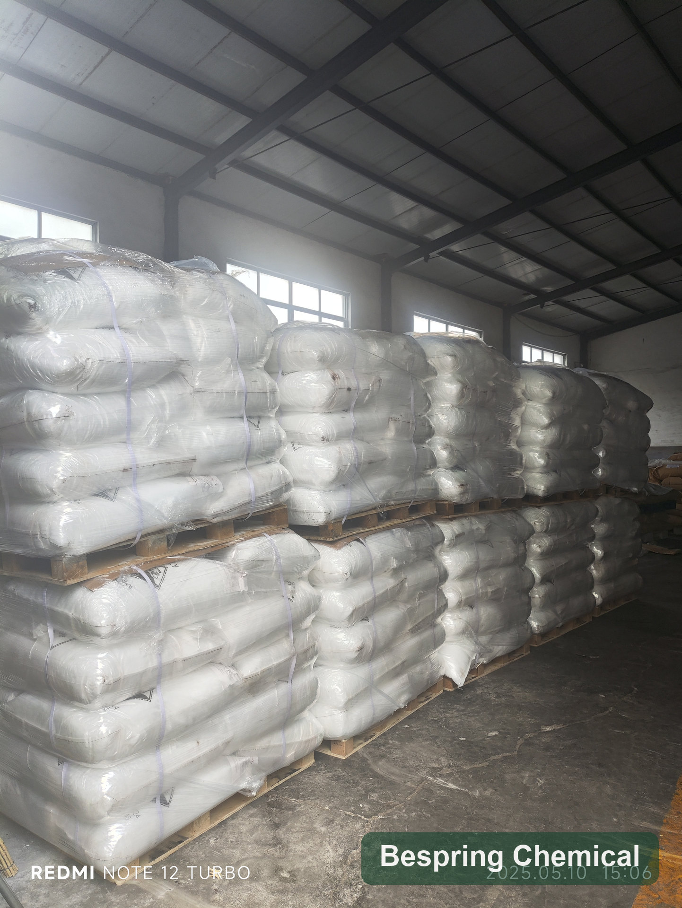
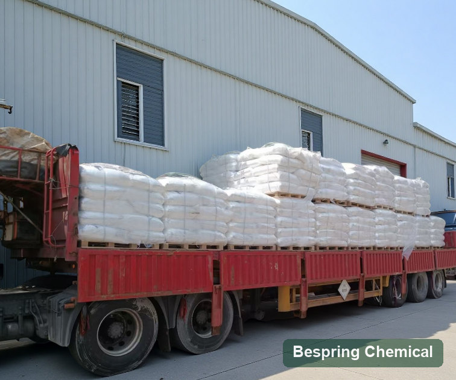

Control de viscosidad
Mida con concentración, temperatura y equipo definidos.
Ingrediente alimentario · Evaluación técnica B2B
Elija la CMC por viscosidad, grado de sustitución y método de medida, no solo por su denominación comercial.
Indique aplicación, cantidad, destino y documentos requeridos para evaluar una oferta concreta.

Identidad del producto
La carboximetilcelulosa sódica E466 es un hidrocoloide. Distintos grados pueden presentar viscosidades y perfiles de hidratación muy diferentes.
Función tecnológica
Puede aumentar viscosidad y ayudar a estabilizar partículas o textura. El resultado depende de concentración, pH, sales, hidratación y cizalla.
Mida con concentración, temperatura y equipo definidos.
Observe sedimentación y textura durante almacenamiento.
Aplicaciones
Se evalúa en bebidas, salsas, lácteos, panificación y otras matrices autorizadas. Pruebe la interacción con los demás ingredientes.
Ajuste sabor, pH y disolución en la fórmula final.
Compare cuerpo y estabilidad frente a ciclos de temperatura.
Compruebe compatibilidad con proteínas, sales y pH.
Evalúe viscosidad, fluidez y estabilidad en el envase.
Ajuste retención de agua y textura al proceso.
Mida hidratación y comportamiento durante preparación.
Grado a medida
Defina concentración, temperatura, equipo, velocidad y preparación de la solución; acuerde grado de sustitución y granulometría.
Acuerde viscosidad, sustitución, granulometría y método.
Datos de referencia
La tabla resume criterios JECFA y preguntas de compra. La viscosidad comercial requiere un método completo por grado.
| Parámetro | Referencia JECFA | Nota de compra |
|---|---|---|
| Descripción | Gránulos, polvo o fibras finas higroscópicos, blancos o ligeramente amarillentos y casi inodoros | Acuerde aspecto y perfil granulométrico |
| Ensayo | No menos de 99,5 % en base seca | No equivale a la pureza de un grado para detergentes |
| Pérdida por secado | No más de 12 % | 105 °C hasta peso constante |
| pH | 6,0–8,5 | Solución 1 en 100 |
| Sodio | No más de 12,4 % en base seca | Confirme el método analítico |
| Cloruro de sodio | No más de 0,5 % en base seca | Control de impurezas |
| Glicolato libre | No más de 0,4 % como glicolato de sodio, en base seca | Control de impurezas |
| Grado de sustitución | 0,20–1,50 | Pueden revisarse intervalos más estrechos |
| Plomo | No más de 2 mg/kg | Las normas del destino pueden añadir requisitos |
| Viscosidad | Se define por el grado comercial | Indique siempre el método completo |
Rendimiento en proceso
Controle la dispersión, el tiempo de hidratación y el orden de adición. Compare lotes con un método constante.
Apoyo de suministro
La selección parte de una especificación verificable y de la documentación vigente del grado ofrecido.
Seleccione y compare lotes con criterios verificables.
Solicite el COA y el alcance de los certificados vigentes.
Confirme envase, destino y documentos antes del envío.
Alinee varios ingredientes sin perder la trazabilidad por producto.
Fotografías de referencia
Las fotografías muestran muestra, equipo, inventario y expedición. Confirme identidad, planta y lote mediante documentos actuales.




Consultas del comprador
Una cifra de viscosidad sin método de ensayo no permite comparar grados con rigor.
Es un hidrocoloide E466 empleado para modificar viscosidad y estabilidad en formulaciones autorizadas.
La oferta depende del método de ensayo y la aplicación; solicite la gama vigente.
Puede revisarse un grado que cumpla el método y los límites pactados, sujeto a disponibilidad.
Indique concentración, temperatura, equipo, velocidad, preparación y tiempo de hidratación.
Verifique el número en la especificación del grado exacto; no confunda la sal sódica con otras formas.
No. Requieren límites y documentación de homologación distintos.
Compare viscosidad, hidratación, pH, sales, textura y estabilidad en su fórmula.
Consulte disponibilidad e indique aplicación y método de comparación.
Grado, método de viscosidad, cantidad, envase, destino y documentos.
Consulta de suministro
Indique la aplicación, el grado, la cantidad, el país de destino y los documentos que necesita. Confirmaremos una oferta concreta.